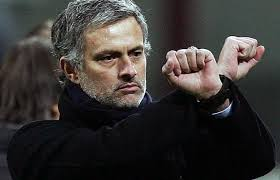
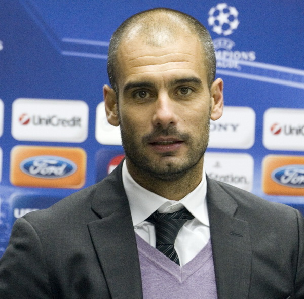
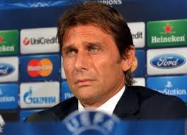
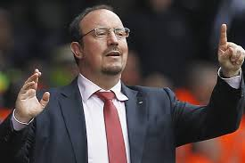
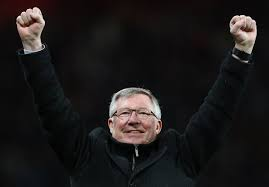
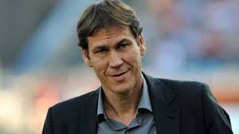

| 1)Jose Mourinho,vincitore di champions con Porto è considerato un grande allenatore. | 2)Pep Guardiola,allenatore giovane spagnolo che attualmente allena il Bayern Monaco. | 3)Antonio Conte,ormai allenatore della juve da 3 anni che ha tirato su questa grande squadra da una crisi calcistica. | 4)Rafael Benitez,allenatore vincente di una Champions League e di una Europa League. | 5)Ferguson,ormai non più allenatore è considerato l'esempio per tutti gli allenatori per la sua intelligenza calcistica. | 6)Rudy Garcia,allenatore della Roma che gioca un ottimo calcio contro tutte le squadre. |